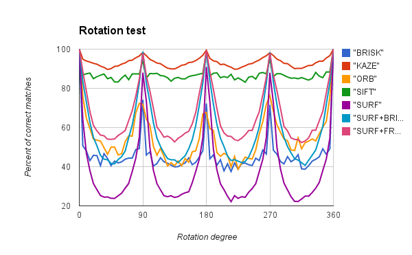
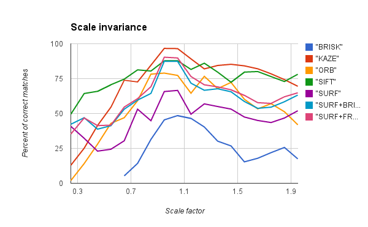
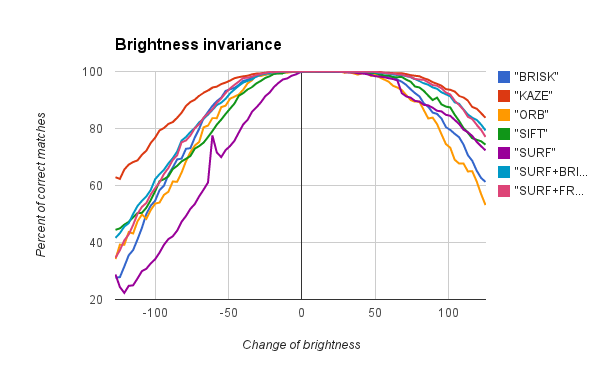
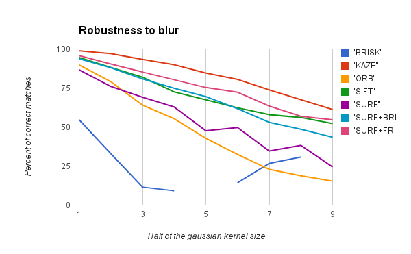

Recently i came across the publications to a new features called KAZE (Japanesee work meaning “Wind”). They interested me, because KAZE authors provided very promising evalutaion results and i decided to evaluate them too using my OpenCV features comparison tool. Fortunately KAZE algorithm is based on OpenCV, so it was not too hard to wrap KAZE features implementatino to cv::Feature2D API.
This post is outdated.
Please, visit updated post: Integration of KAZE 1.6 in OpenCV
Impatient readers: you can grab the most recent version of KAZE port to OpenCV here: kaze-features.
Short video demonstration:
KAZE & OpenCV
I’m not gonna describe the algorithm by itself or implementation details, you may wish to read the original paper or look at the code if you have enough mana.
If not - don’t worry, using KAZE features is easy like any other feature algorithm:
cv::Mat image = /* ... your image goes here ... */
cv::KAZE kazeFeatures;
kazeFeatures(image, keypoints, descriptors);
KAZE algorithm is not included in the official OpenCV repository yet. It exists only in my fork of the opencv on github. You can clone it and build OpenCV with KAZE algorithm by yourself:
git clone https://github.com/BloodAxe/opencv kaze-features
I’m going to cooperate with KAZE authors and help them to include KAZE algorithm to OpenCV library. So kaze-features branch in my opencv fork will be updated constantly with more recent versions.
KAZE Estimation
I did a comparison of KAZE features with other descriptors and here are the results that i got using my OpenCV Comparison Tool:




Conclusion
Regarding to the results of estimation the KAZE algorithm is much more robust than state of the art algorithms like SURF and FREAK or BRISK.
It’s amazing! In all tests KAZE features shows best results !!!
Currently KAZE features are somewhat slow. I contacted with one of it’s authors and he assured me that they are working on this problem so i beleive they will improve their performance in the near future.
Licensing
I’ve contacted with one of authors of KAZE features and asked him about code license and usage rights. Here it is:
Pablo Fernandez Alcantarilla
The code is released under BSD license. So it is completely free. That was my initial goal, I wanted to do something open source better than SIFT, SURF so people don’t need to mess up with the patents.